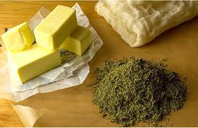
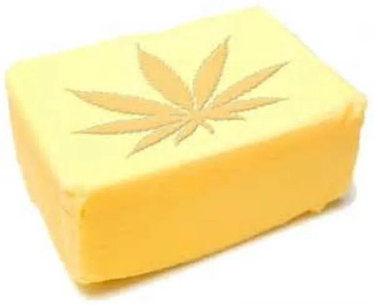

Hoy os presentamos una receta muy fácil y sencilla de hacer. Como hacer mantequilla de marihuana. Ésta es imprescindible en nuestra cocina para preparar cualquier receta con cannabis. La mantequilla de marihuana es una buena alternativa para aquellas personas que quieran consumir cannabis sin tener que fumar o vaporizar, tanto en uso medicinal como en uso recreativo para darle un toque especial a nuestras recetas y disfrutar de nuestras comidas de una forma diferente.Cabe destacar, el cuidado que hemos de tener con la dosis de este tipo de recetas, puesto que al comer, se aprovecha toda la marihuana, mientras que al fumar solo aprovechamos el 40%. Con esto queremos decir que su efecto psicoactivo es mayor, y que debemos controlar las dosis que comemos empezando poco a poco.A continuación, explicamos paso a paso los ingredientes y la forma de preparación.
Ingredientes
- 250gr de mantequilla
- 500ml de agua
- 15gr de hojas con resina o 5gr de cogollos
Preparación de Mantequilla de Marihuana:
Para elaborar nuestra mantequilla de marihuana no es necesario que utilicemos solo cogollos, podemos hacerlo con las hojas con más resina, o mezclando cogollos y hojas y así guardar nuestros mejores cogollos para fumar.Lo primero que deberemos hacer será hervir nuestra hierba en agua, a fuego muy suave durante 20 minutos, ya que podemos estar tranquilos que en el agua no suelta el THC. De esta manera conseguiremos quitarle el sabor a clorofila y casi todas las impurezas, dejándolo listo para mezclarlo con la mantequilla.
Cuando estemos seguros de que nuestra hierba ha soltado todo su juego y que ya tenemos una pasta homogénea y verdosa, es el momento de filtrar nuestra mantequilla con un colador, para asegurarnos que no nos queda ningún tipo de rastrojo.Deberemos dejarlo enfriarse a temperatura ambiente un par de horas, para después meterlo en la nevera y dejarlo reposar 24h. Nos quedará una capa de mantequilla flotando sobre el agua, con una textura muy similar a que compramos, pero de un color mucho más verde.Así, ya tendremos lista nuestra sencilla receta y sabremos como hacer mantequilla de marihuana.